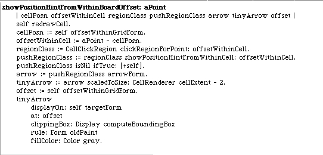
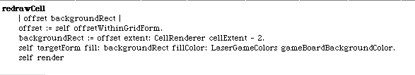

Cleaning up cells when we leave the push regions is easy. We already have the hook in our existing code. When we detect that we no longer have a push region we should redraw the cell. But then since we also redraw the cell just before we draw the arrow hint, the simple solution is to always redraw before we detect if we are in a push region.
When we blank the cell and redraw, our code was skipping over redraw of the borders. We can fix that by changing our redraw method to just redraw the whole mirror cell.
Try out the LaserGame morph now and we seem to have the drawing issues, except for arrow position, solved. Here are the two tweaks I made to our hint drawing method. I adjusted the offset by a small constant and moved the arrow. I also changed the clipping region to be the whole game board. You can try out arrow rendering by hovering over mirror cells as soon as this code is changed.